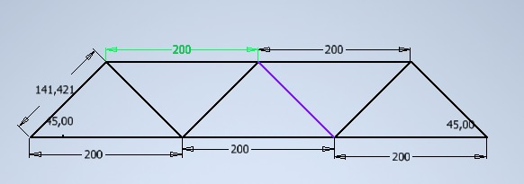
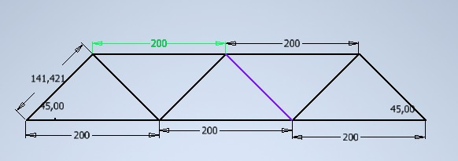

¿Qué son las resistencias de estructuras metálicas?
Las resistencias de estructuras metálicas son una serie de propiedades y características que determinan la capacidad de una estructura de acero para soportar las cargas y fuerzas a las que está expuesta. Estas resistencias son fundamentales para garantizar la seguridad y estabilidad de las construcciones metálicas.
Tipos de resistencias
Existen diferentes tipos de resistencias que se consideran al diseñar una estructura metálica:
- Resistencia a la tracción: Es la capacidad del acero para resistir fuerzas de tracción, es decir, fuerzas que tienden a estirar el material.
- Resistencia a la compresión: Es la capacidad del acero para resistir fuerzas de compresión, es decir, fuerzas que tienden a aplastar el material.
- Resistencia al corte: Es la capacidad del acero para resistir fuerzas de corte, que actúan en planos perpendiculares al eje longitudinal de la estructura.
- Resistencia a la flexión: Es la capacidad del acero para resistir fuerzas que producen flexión en la estructura, como las cargas aplicadas en los extremos de una viga, por ejemplo.
- Resistencia a la torsión: Es la capacidad del acero para resistir fuerzas que producen torsión, es decir, el giro o torsión de la estructura alrededor de su eje longitudinal.
Importancia de las resistencias en el diseño estructural
El conocimiento de las resistencias de las estructuras metálicas es esencial para los ingenieros y diseñadores estructurales. Estas resistencias son utilizadas para calcular y dimensionar los elementos de la estructura, asegurando que sean capaces de soportar las cargas previstas, cumpliendo con los requisitos de seguridad y durabilidad.

medidadas de la estructura
 

Con las medidas de la estructura procedemos a realizar una simulación por el programa inventor esto con el fin de mirar, los factores de falla de la pieza.
Video real
En el video se observa como se realiza la prueba de deformacion de una estructura metalica, realizada por los estudiantes del curso de resistencia de materiales; esta prueba se realizo en una prensa mecanica, la cual ejerce una fuerza de comprension de uidades de medida Psi, sobre la estructura metalica, ademas de esto se observa que con una fuerza al rededor de 50 Psi se deforma la estructura
Calculos


simulación

En esta imagen observamos el diseño principal de la estructura, utilizando un hierro gris.
simulación con carga
Referencias
Manual del Eurocódigo 3: Diseño de estructuras de acero. Comité Europeo de Normalización (CEN). Disponible en: https://www.cenor.pt/pt/catalogo/norma/4461/ Design of Steel Structures - Eurocode 3: Design of Steel Structures - Part 1-1: General Rules and Rules for Buildings. European Committee for Standardization (CEN).